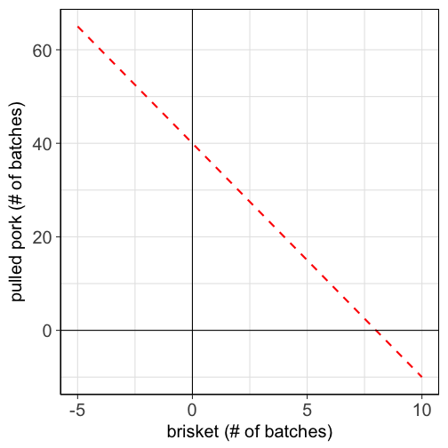
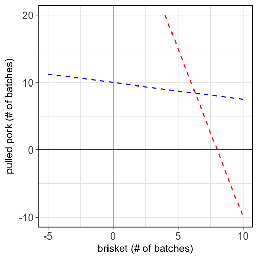
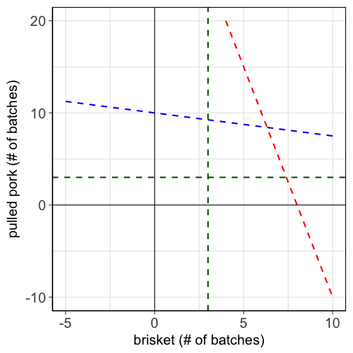
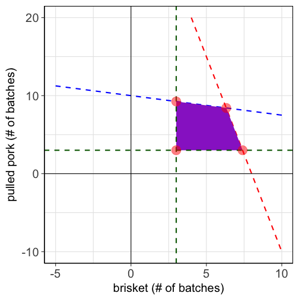
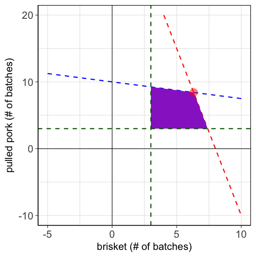
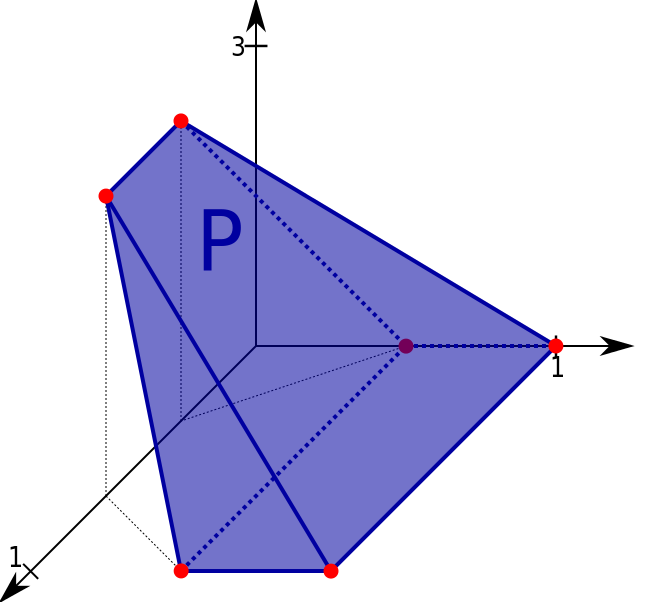
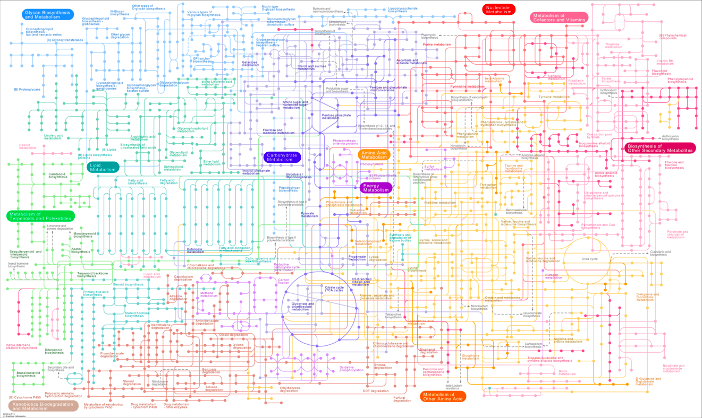
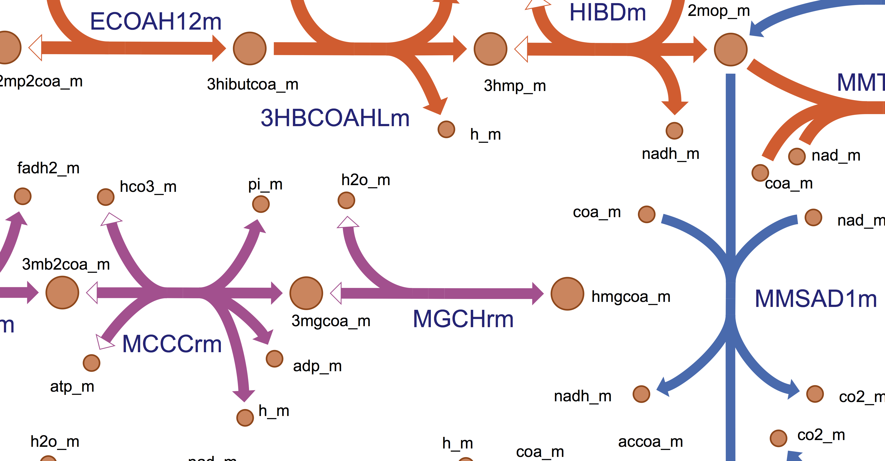
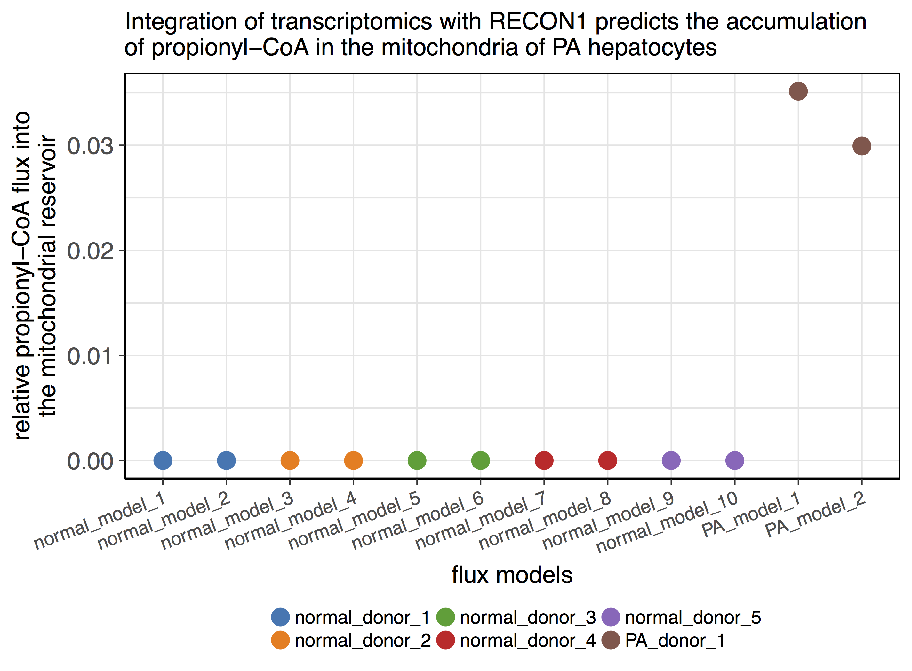
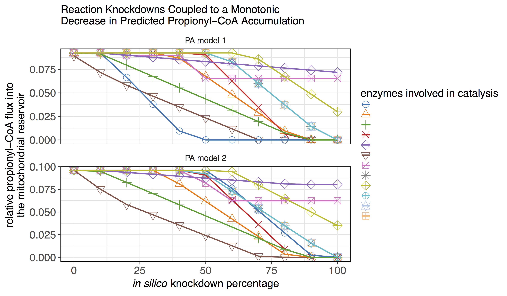

Computers, WOW.
Applications in barbecue, metabolism, and more!
Steve Hoang
Much of the work of a computational biologist involves reframing biological questions in a rigorous mathematical context. Once this is accomplished we can use the tools of applied mathematics to gain insight into the biology.
Beauty in generality
Many diverse problems: One solution.
- supply chain management
- airline scheduling
- staffing
- military deployment
- waste management
- investment planning
- transportation engineering
- modeling metabolism
Major problems in each field can be addressed with a technique known as linear programming.
A little history
- Linear programming is a subfield of mathematical programming (B.K.A. mathematical optimization)
- The theory behind linear programming was worked out in the 1940s by Soviet and American mathematicians (primarily Leonid Kantorovich, George Dantzig, and John von Neumann).
- The development was motivated by the desire to solve complex logistical military problems.
- The words "program" / "programming" do not refer to computer programming. Rather, they refer to logistics schedules, which were referred to as "programs" by the U.S. military at the time.
- Linear programming is now ubiquitous. Many industires with high logistical demands are wholly reliant linear programming and related techniques; e.g., airlines, delivery services, etc.
In linear programming, one searches for the best way to allocate resources under a set of constraints.
What does a linear program look like?
You loved them; they're back: Word problems.
What does a linear program look like?
You loved them; they're back: Word problems.
Meremy Jauldin just founded "Humvees n' Hickories Barbecue Company" where he expects to find his fortune and true calling. He plans on starting off with an offering of pulled pork, and of course his greatest passion, brisket. The profit margins on batches of pork and brisket are \$300 and $500, respectively. Meremy's secret 2-step smoking process requires both hickory and apple wood. The brisket takes 15 hours in the hickory smoker and 3 hours in the apple wood smoker. The pork takes 3 hours in the hickory smoker and 12 hours in the apple wood smoker. He's got 120 smoker-hours per smoker per week. He wants to make at least 3 batches of each offering per week. How many batches of each should he make (and sell) per week to maximize his profits?
What does a linear program look like?
You loved them; they're back: Word problems.
Meremy Jauldin just founded "Humvees n' Hickories Barbecue Company" where he expects to find his fortune and true calling. He plans on starting off with an offering of pulled pork, and of course his greatest passion, brisket. The profit margins on batches of pork and brisket are \$300 and $500, respectively. Meremy's secret 2-step smoking process requires both hickory and apple wood. The brisket takes 15 hours in the hickory smoker and 3 hours in the apple wood smoker. The pork takes 3 hours in the hickory smoker and 12 hours in the apple wood smoker. He's got 120 smoker-hours per smoker per week. He wants to make at least 3 batches of each offering per week. How many batches of each should he make (and sell) per week to maximize his profits?
| BBQ | apple_time | hickory_time | min_batch | profit | |
|---|---|---|---|---|---|
| 1 | Pulled Pork | 12 hrs | 3 hrs | 3 | $300 |
| 2 | Brisket | 3 hrs | 15 hrs | 3 | $500 |
How can we mathematically define an LP?
The first step is to define all of the constraints.
The constraints on the hickory smoker: \[15b+3p\leq120\]
How can we mathematically define an LP?
The first step is to define all of the constraints.
The constraints on the hickory smoker: \[15b+3p\leq120\] The apple wood smoker: \[3b+12p\leq120\]
How can we mathematically define an LP?
The first step is to define all of the constraints.
The constraints on the hickory smoker: \[15b+3p\leq120\] The apple wood smoker: \[3b+12p\leq120\] The minimum number of batches: \[p\geq3\] \[b\geq3\]
How can we mathematically define an LP?
Next we need to define the "objective function," which is profit in this case: \[P=300p+500b\]
How can we mathematically define an LP?
Now we have the full linear program:
constraints: \[15b+3p\leq120\] \[3b+12p\leq120\] \[p\geq3\] \[b\geq3\] objective: \[P=300p+500b\]
The geometric interpretation of an LP
We can visualize the constraints on a plot: \[15b+3p\leq120\]

The geometric interpretation of an LP
We can visualize the constraints on a plot: \[15b+3p\leq120\] \[3b+12p\leq120\]

The geometric interpretation of an LP
We can visualize the constraints on a plot: \[15b+3p\leq120\] \[3b+12p\leq120\] \[p\geq3\] \[b\geq3\]

The geometric interpretation of an LP
We can visualize the constraints on a plot: \[15b+3p\leq120\] \[3b+12p\leq120\] \[p\geq3\] \[b\geq3\]
A remarkable theorem
The corner point theorem guarantees that an optimal solution will be found at one of the corner points (vertices):
- (3, 3)
- (6.32, 8.42)
- (3, 9.25)
- (7.4, 3)

A remarkable theorem
The corner point theorem guarantees that an optimal solution will be found at one of the corner points (vertices):
- (3, 3)
- (6.32, 8.42)
- (3, 9.25)
- (7.4, 3)
The objective function (i.e., profits) are maximized when b=6.32 and p=8.42: \[P(b,p)=500b+300p\] \[P(6.32,8.42)=500\times6.32+300\times8.42=5686\]
Spend your new fortune wisely, Meremy!

Moving into higher dimensions
The barbecue problem was a 2 dimensional problem with 4 inequalities (constraints). A three dimensional problem has (surprise!) a 3 dimensional solution space. The number of inequalities determines the number of facets of the polytope.

Moving into higher dimensions
The barbecue problem was a 2 dimensional problem with 4 inequalities (constraints). A three dimensional problem has (surprise) a 3 dimensional solution space. The number of inequalities determines the number of facets of the polytope.
Many real world problems have tens of thousands of dimensions and constraints.
If only we had some kind of automatic arithmetic doing thingy...
The simplex algorithm
Even very large linear programs can be solved rapidly with computers and efficient algorithms.
The simplex algorithm
Even very large linear programs can be solved rapidly with computers and efficient algorithms.

The simplex algorithm
Even very large linear programs can be solved rapidly with computers and efficient algorithms.
With improvements in computing technology and algorithmic efficiency, certain types of LPs can be solved hundreds of billions of times faster than they could just 25 years ago.
How is LP used in computational biology?
Problems in computational biology are very diverse. The applications of such a general technique is largely limited by the creativity of the user.
- Cancer diagnosis
- Biological sequence alignment
- Protein folding models
- Haplotype retrevial with missing information
- Prediction of disease susceptibility given genotypes
- Genome-scale prediction of metabolite utilzation (i.e., flux)
Genome-scale models of metabolism

Genome-scale models of metabolism

For every reaction, mass in must equal mass out - debits must equal credits.
Reaction stoichiometries and the laws of thermodynamics provide system-wide constraints. Under these constraints, we want to find the flux distribution that best matches our data.
In silico models of propionic acidemia

Our in silico models recapitulate the disease phenotype.
In silico target search
To conduct a target search we add constraints to the model to simulate a therapeutic intervention. E.g., we can constrain the flux through a particular reaction to be zero, which simulates the effect of an inhibitor. Constraints that reduce the predicted production of P-CoA correspond to potential targets.
In silico target search

~10 reactions out of ~4000 are predicted to affect the production of P-CoA
In silico target search
- Apply the same strategy to new rare diseases
- Similar, but slightly different approach in NASH
Linear programming is one of many tools in the computational biologist's kit for integrating experimental data with existing knowledge to yield new insights.